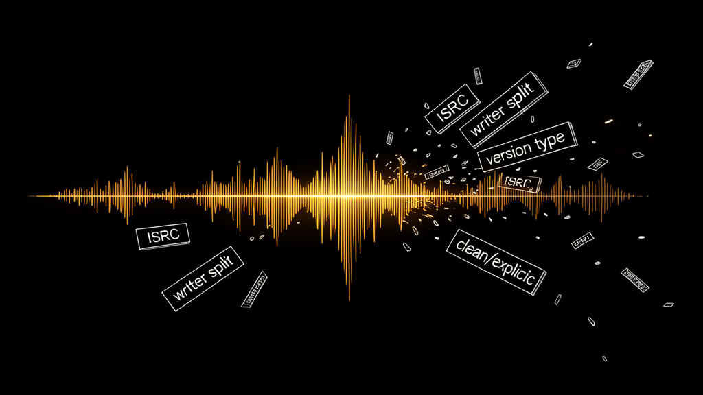
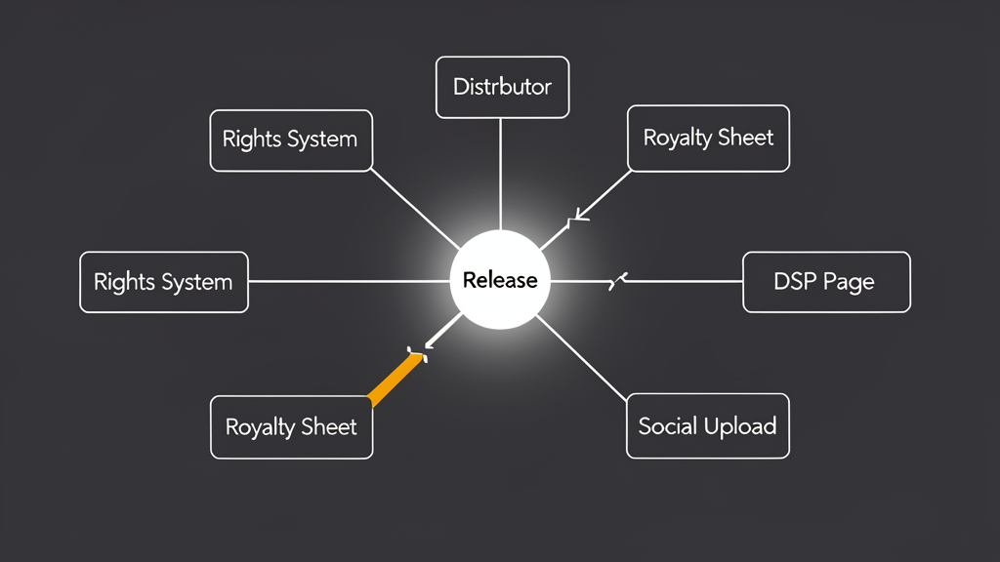
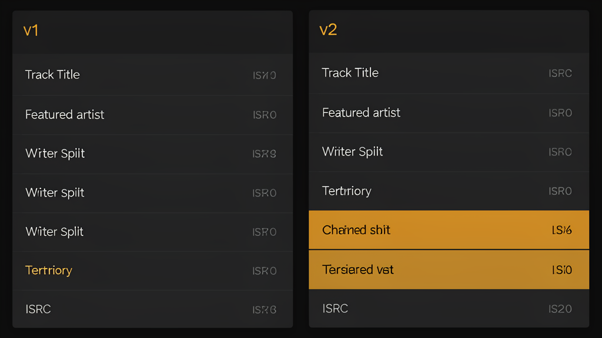
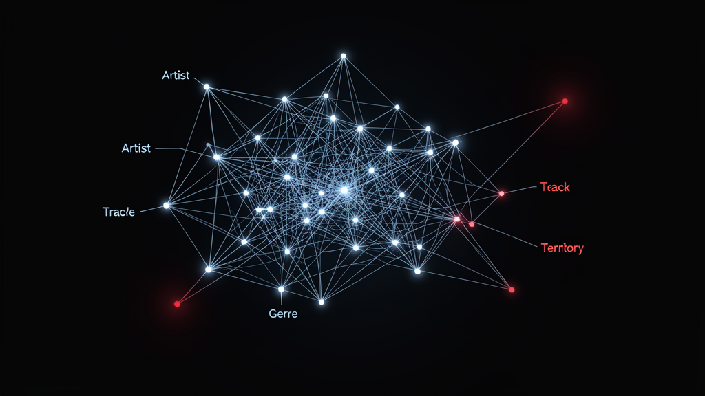

Essay / Music Metadata / Infrastructure
The Song Is Not the File
The modern music stack still treats metadata like paperwork that follows a track after release. In practice, metadata shapes authorship, royalties, search, recommendation, rights clearance, and even whether a song survives contact with the internet.
By Suhaas Chitturi - Editor
Published: May 2, 2026
Reading time: 9 minutes
Format: Long-form field note with rights, product, and release examples
A release is really a bundle of identifiers, claims, credits, and technical decisions moving in unstable sync.
Music people still talk about songs as if they are singular objects: a finished recording, a file on disk, a master sitting in a distributor dashboard. That picture was never quite accurate, and it gets less accurate every year. The minute a track leaves the DAW it begins to multiply into versions, identifiers, clearances, collaborator claims, territories, edits, uploads, and references inside other systems. A listener hears one song. The industry handles a chain of linked records that rarely agree with one another for long.
That gap matters because modern music does not fail only at the level of taste. It also fails at the level of administration. The wrong songwriter percentage in one tool can freeze a release. A missing ISRC can break reporting. An artist name variation can split a catalog into two identities that recommendation systems treat as strangers. When metadata drifts, the technical layer quietly rewrites the commercial reality of the music itself. A track can be culturally visible and operationally invisible at the same time.
The file became a container, not the work
An audio file still matters, but mostly as a transport surface. What labels, DSPs, collection societies, rights managers, and catalog teams actually rely on is the descriptive layer wrapped around it. Track title, version type, featured artist syntax, writer splits, publisher information, clean or explicit flags, local release times, artwork ratios, audio specifications, and ownership territories all behave like small technical details until they collide. Then they become the release.
This is why catalog operations has started to look like product operations. Teams build validation layers, diff release packages, and track changes across systems because manual review cannot keep up with the pace of releases. The most resilient teams now treat a song release the way software teams treat deploys: as a composed artifact with structured data, reproducible checks, and a clear audit trail of who changed what, when, and why.
Metadata is the part of the song the business can actually execute.
Naming is infrastructure disguised as copy
The industry still underestimates how much damage comes from naming inconsistency. The parenthetical on a remix, the punctuation around a featured guest, the decision to capitalize "Deluxe" or not, the choice between "Pt. II" and "Part 2" all sound editorial. They are operational. Search, matching, ingestion, and rights systems treat these micro-choices as real differences. Once mismatches propagate across distributor feeds, spreadsheets, royalty systems, and platform pages, humans are forced to perform identity resolution by hand.
The expensive part is not correcting one typo. It is correcting the same typo after five vendors have already built logic around it.
Good metadata practice therefore begins before release week. Teams need a canonical naming source, a change log, and a standard for how versions are represented across singles, EPs, video uploads, and social clips. This is not bureaucracy for its own sake. It is the minimum structure required to keep the same cultural object recognizable as it passes through different machines.

The hidden work is reconciliation
Most of the music technology that earns trust does not feel glamorous in the interface. It reconciles. It compares an incoming package with the last approved state, flags the deltas, and shows whether those deltas are safe. The core interaction is not "upload song." It is "prove this release package still describes the same release after six collaborators, three managers, and two external vendors touched it."
That is why the best tools in this space tend to borrow from engineering culture rather than marketing culture. They show IDs. They preserve history. They make comparison legible. They let a catalog manager inspect whether a title update also changed a songwriter line or whether a territory exclusion got dropped in a revision. Music teams increasingly need interfaces that respect operational detail instead of hiding it behind bright onboarding and oversized cards.

- Keep one canonical release record that every downstream export derives from.
- Track metadata changes as explicit revisions, not silent overwrites.
- Validate identifiers, splits, and title conventions before external delivery.
- Make comparison views first-class so non-technical teams can inspect drift.
Recommendation systems hear structure as well as sound
Metadata also shapes discovery in ways listeners never see. Recommendation engines do not rely purely on audio analysis; they absorb context from catalogs, contributor graphs, genre assignments, release timing, territory availability, and relationships between versions. A mislabeled work or fragmented artist identity can push a track into the wrong neighborhood before anyone ever presses play. In other words, metadata is not only an accounting layer. It is part of how platforms understand meaning.
This is where music, metadata, and technology stop being separate topics. They collapse into one problem: how to maintain coherent meaning across systems that each optimize for different goals. One system wants rights certainty. Another wants recommendation precision. Another wants accurate search and editorial surfacing. The release only performs well if the underlying description survives all three.

What a better blog, tool, or workflow should do
If you are building in this space, the design target is not a louder music aesthetic. It is calmer operational truth. Show the important fields. Expose the lineage of a release. Make state changes obvious. Keep prose readable enough that editors will trust it, but keep the structure strict enough that operations teams can use it without fear. A good music metadata tool should feel like an argument against ambiguity.
The same principle applies to publishing about the topic. A useful blog page for this domain should carry long-form thinking without dissolving into generic magazine softness. It needs a frame strong enough for technical detail, a rhythm clear enough for editorial reading, and a structure that can scale as the archive grows. The page should suggest that every future article belongs to a system, not a one-off template. That is ultimately what metadata offers too: not decoration, but continuity.